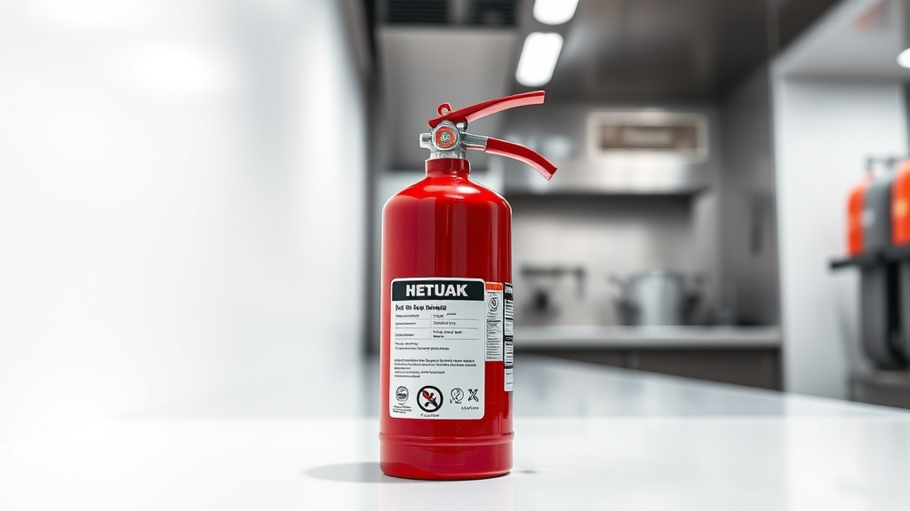
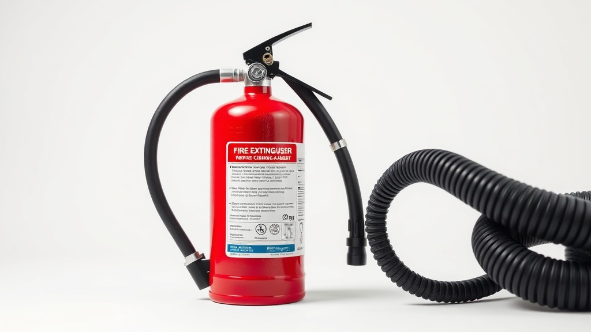
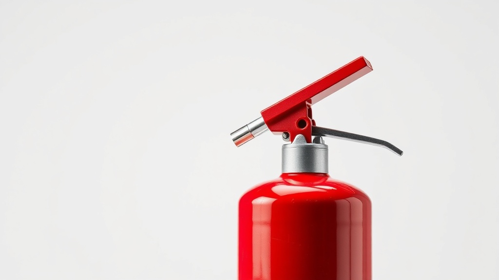
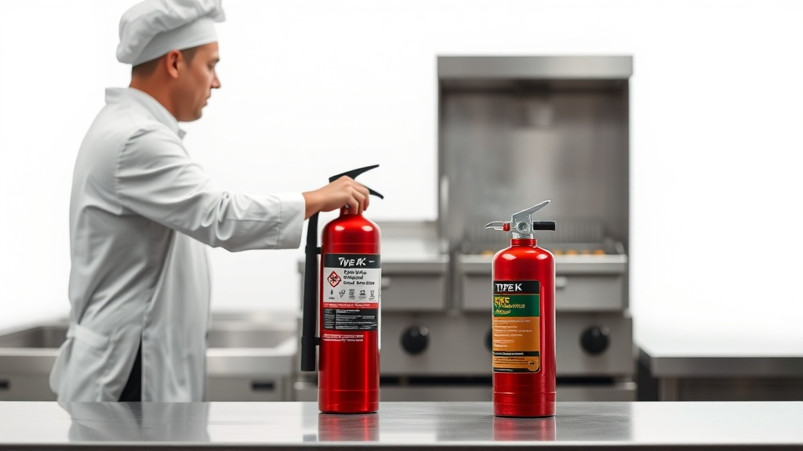

El Extintor Tipo K 1.6 Galones Premium es la solución ideal para la protección contra incendios en cocinas comerciales. Diseñado específicamente para fuegos de clase K, ofrece un alcance de 3-4 metros, asegurando una respuesta rápida y efectiva.
Compra ahora el Extintor Tipo K 1.6 Galones Premium y asegura tu tranquilidad.
Cotizar por WhatsAppEl Extintor Tipo K 1.6 Galones Premium es esencial para cualquier cocina comercial que busque cumplir con las normativas de seguridad y garantizar la protección ante incendios provocados por aceites y grasas. Este extintor utiliza acetato de potasio, un agente eficaz para sofocar rápidamente los incendios de clase K, sin riesgo de re-ignición. Con un diseño ergonómico y fácil de usar, es una herramienta indispensable para una respuesta rápida y segura en situaciones de emergencia.
Para garantizar la eficacia del Extintor Tipo K 1.6 Galones Premium, es crucial realizar inspecciones mensuales del manómetro, verificar la integridad del sello de seguridad y agitar el extintor periódicamente para asegurar la movilidad del agente. Se recomienda un mantenimiento profesional anual, disponible a través de los servicios de MANEXT.
Este extintor cumple con las normativas mexicanas NOM-154-SCFI y NOM-002-STPS, asegurando que su fabricación y funcionamiento están alineados con los más altos estándares de seguridad y calidad. Esto garantiza su eficacia en situaciones de emergencia y su aceptación en inspecciones de seguridad.
Ofrecemos una garantía de 5 años contra defectos de fabricación. Además, cada extintor cuenta con certificaciones que avalan su calidad y desempeño, asegurando una inversión segura y confiable.
El extintor tipo K está diseñado específicamente para apagar incendios de clase K, que involucran aceites y grasas comunes en cocinas comerciales.
La descarga del extintor Tipo K 1.6 Galones Premium dura entre 30 y 40 segundos, dependiendo de las condiciones de uso.
Sí, es recomendable realizar inspecciones mensuales y un mantenimiento profesional anual para asegurar su funcionamiento óptimo.
Aunque es más común en cocinas comerciales, también puede ser adecuado para hogares con cocinas grandes o que usen frecuentemente aceites en la cocina.
MANEXT ofrece servicios de venta, mantenimiento y recarga de extintores, asegurando que tu extintor tipo K se mantenga en perfectas condiciones de funcionamiento.